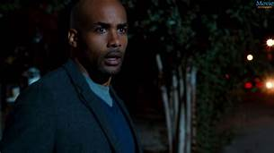

ADDICTED
Addicted is a 2014 American erotic thriller drama film directed by Bille Woodruff from a screenplay by Christina Welsh and Ernie Barbarash, based on Zane's novel of the same name. It stars Sharon Leal, Boris Kodjoe, Tasha Smith, Tyson Beckford, Emayatzy Corinealdi, and William Levy. The film was released in the United States on October 10, 2014, by Lionsgate.Zoe Reynard (Sharon Leal) has the perfect life with her husband Jason (Boris Kodjoe) and two children, and is the CEO of her own company which signs and develops aspiring artists. One evening she attends an art show of Quinton Canosa (William Levy); the two meet and share some flirtation. Zoe later visits his apartment to discuss a contract, and the two end up having sex. Zoe feels immense guilt and tries to end it with Quinton; they break up regularly but always inevitably end up getting back together. On one particular occasion, when Zoe goes to get back with Quinton, she finds him having sex with his neighbour. Throughout the film, Zoe is telling this story as a flashback to her psychotherapist, Dr. Marcella Spencer (Tasha Smith), who after diagnosing her with sex addiction, assumes it might have been something from Zoe's past that keeps coming back to haunt her and pressures her to confess. However, each time her psychotherapist asks, Zoe avoids the question and walks out. Zoe's addiction begins to take over her life; she soon begins sleeping with a second man, Corey (Tyson Beckford), whom she met at a club. One day, when she comes home from work, she finds Corey at her home talking to her mother. Seeing the danger she had put her family in, Zoe decides that she wants to try to fix her marriage with Jason. She invites both Corey and Quinton to meet her at Quinton's apartment and breaks up with both of them. Corey becomes angry and lunges at her but Quinton blocks him. As Corey leaves, Quinton knocks him out with a vase. Zoe becomes afraid of Quinton and tries to calm him down; Quinton tells her that she is not going to leave him. Frightened, Zoe shoves glass artwork between them, smashing it to pieces. She then hides from Quinton who is chasing her with a knife. Suddenly Jason appears and smashes a sculpture over Quinton's head. Jason reveals he found out about Zoe cheating via her cellphone.
SHOW TIME
STARTS 19 JANUARY,10JAN,15JAN,17JAN,18FEB
Desire and the dangers of indiscretion. Successful businesswoman Zoe Reynard (Sharon Leal) appears to have attained it all - the dream husband she loves (Boris Kodjoe), two wonderful children and a flourishing career. As perfect as everything appears from the outside, Zoe is still drawn to temptations she cannot escape or resist. As she pursues a secretive life, Zoe finds herself risking it all when she heads down a perilous path she may not survive.

